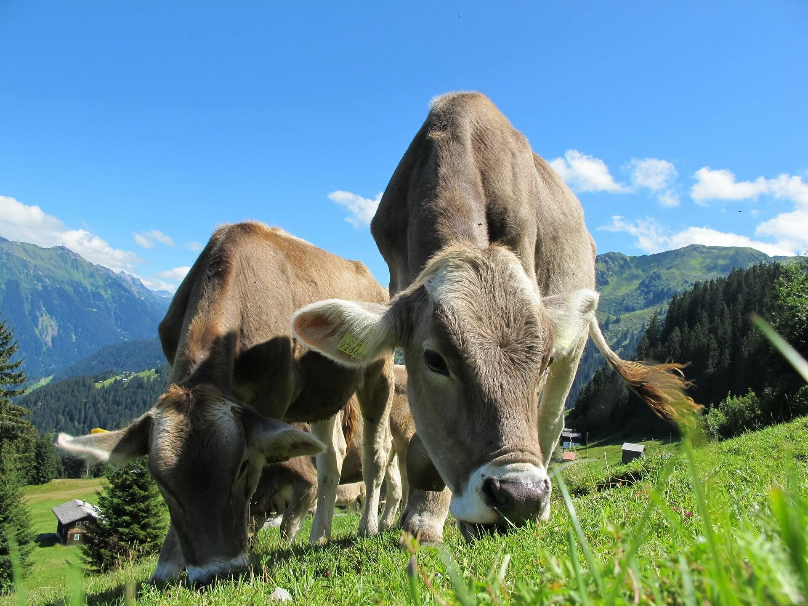
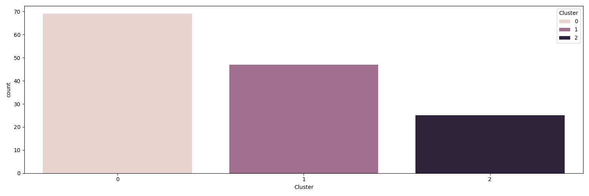
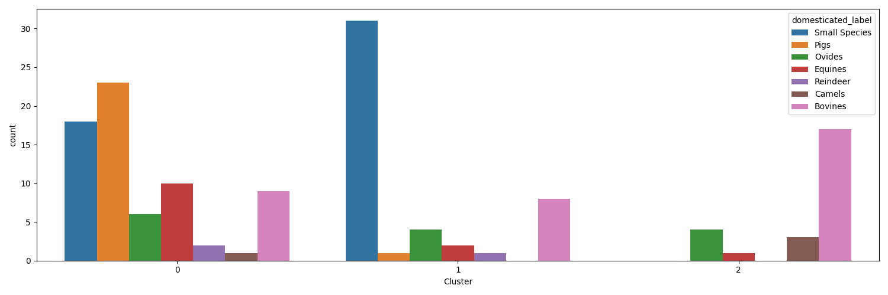
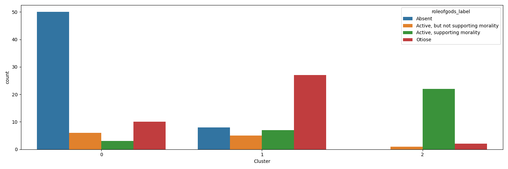
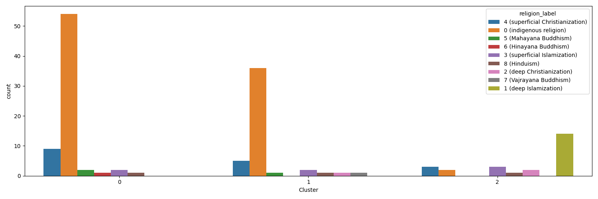
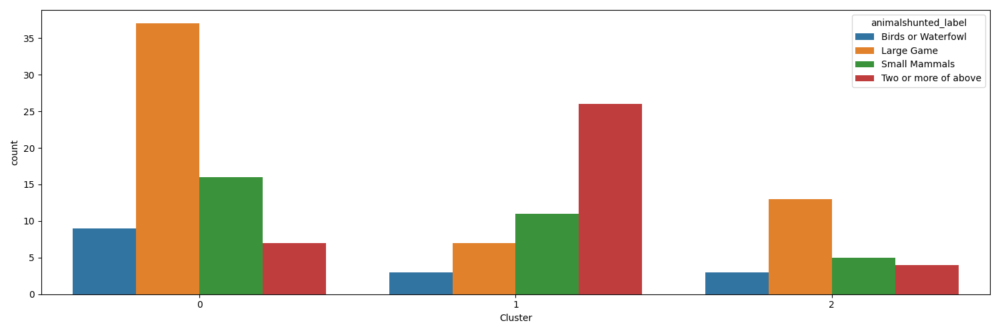
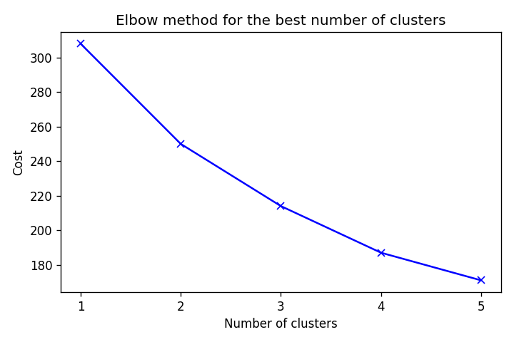

Data science · Cultural anthropology · Python
ML Applications in Anthropology
What do societies farm, hunt and believe? Two projects use maps and machine learning to look for patterns in 141 societies.

01 Two tools, one question
This project started in an anthropology course that treats culture as data. The question: where do food taboos come from? Pigs are taboo in Judaism and Islam. Do societies that keep pigs have different gods, hunting habits and religions from societies that keep other animals?
To look for an answer, I built two small Python tools. One maps the data. The other clusters it with machine learning.
1. Domesticated animals map
Every society gets an icon for its main domesticated animal. Click an icon to read about the gods, hunting and religion of that society.
2. Clustering demo
The K-Modes algorithm groups societies with similar animals, gods and religion. Charts and a map show what each group has in common.
02 141 societies, four categorical variables
The data comes from D-PLACE, a database of cultural data. Locations come from Glottolog. Every variable is a category, not a number. This is why the clustering uses K-Modes.
| Variable | What it describes | Example values |
|---|---|---|
domesticated_label | The main domesticated animal | Pigs, Bovines, Camels, Small Species |
roleofgods_label | The role of the gods | Absent, Otiose, Active (supporting morality) |
animalshunted_label | The animals that people hunt | Large Game, Small Mammals, Birds or Waterfowl |
religion_label | The main religion | Indigenous religion, Islamization, Christianization |
focal_year | The year that the data describes | 1880 |
23 societies have no coordinates. They appear in the clustering but not on the maps.
03 Map of primary domesticated animals
Hover over an icon to see the society. Click it to see the focal year, the role of the gods, the animals hunted and the religion.
- Small species
- Pigs
- Ovis
- Equines
- Reindeer
- Camels
- Bovines
How it works
pandas joins the society data to the coordinates. Folium draws one marker for each society. Branca adds the legend. The script is map.py.
04 Clustering societies with K-Modes
Clustering puts similar items in the same group. K-Modes is like K-Means, but it works with categories. The center of a group is the most common category of each variable.
What each cluster has in common
Cluster 1 · Black
- Gods are absent (50 societies)
- Pigs are the main animal in 23 of the 24 pig societies
Cluster 2 · Green
- Gods are otiose (27)
- Small animals are the main animal (31)
- People hunt two or more kinds of animal (26)
Cluster 3 · Red
- Gods are active and support morality (22)
- Deep Islamization is common (14)
- Bovines (17) and camels (3) are the main animals
The elbow curve has no sharp bend, so 3 clusters is a readable choice and not a proof. A fixed seed (SEED = 42) makes each run give the same result.
Charts






The charts and map from the original 2021 analysis are in the repository. Its random start was different, so the cluster sizes differ a little. The main pattern is the same.
05 Run the projects yourself
You need Python 3.9 or later.
git clone https://github.com/briannarimm/ml-applications-in-anthropology.git
cd ml-applications-in-anthropology
python3 -m venv .venv
source .venv/bin/activate
pip install -r requirements.txt
python domesticated-animals-map/map.py # writes the animal map
python clustering-demo/clustering.py # writes charts, CSV files and the cluster map
python -m http.server 8000 # open http://localhost:8000To use your own data, change the CSV files in data/. Keep the column names. To change the number of clusters, change N_CLUSTERS in clustering.py.
06 Sources and thanks
- Data: D-PLACE (Murdock & Morrow 1970; Murdock 1962–1971 and Gray 1999; Rosenblatt, Walsh & Jackson 2011) and Glottolog 4.4.
- Icons: Symbolon, BomSymbols, Doodle Icons and KonKapp from the Noun Project (CC BY 3.0).
- Header images: Pixel-Sepp and Pexels on Pixabay.
- Software: Folium, Branca, pandas, kmodes, seaborn and Matplotlib.
Full citations are in CREDITS.md.